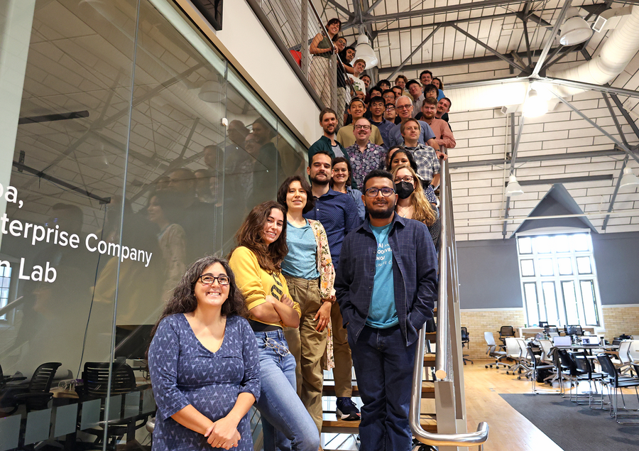

The inaugural FuncaPalooza workshop wrapped up with a burst of creativity and collaboration, bringing together researchers, technologists, and ecologists to push the boundaries of open science and biodiversity data.
Hosted at The Ohio State University’s Translational Data Analytics Institute, FuncaPalooza 2025 marked the first event of its kind, designed as a hands-on gathering where participants pitched projects and rapidly built solutions around ecological and biodiversity challenges.
Over several days, attendees formed subgroups to co-develop tools for trait extraction, ecological monitoring, and scalable data workflows using artificial intelligence and open hardware.
Discussions set the stage for technical bootcamps, lightning talks, and project pitches. The format encouraged participants to bring their own ideas, form cross-disciplinary teams, and create working prototypes and datasets in real time.
Evenings offered a chance to connect outside the lab, with informal gatherings at local venues and a salsa dancing outing, building the camaraderie that organizers say is just as important as the science.
“FuncaPalooza is about lowering barriers, sparking ideas, and showing what’s possible when diverse perspectives come together,” said Tanya Berger-Wolf, director of the Imageomics Institute and ABC Global Climate Center. “The energy this community brings is shaping the future of how we use AI and open science to study and preserve life on Earth.”
Outputs from the event, including shared GitHub repositories, training resources, and datasets like TreeOfLife-200M, will continue to evolve as collaborative projects beyond the workshop. Organizers emphasized that FuncaPalooza is more than an event: it is the beginning of a movement to democratize biodiversity science through open, accessible, and AI-powered tools.